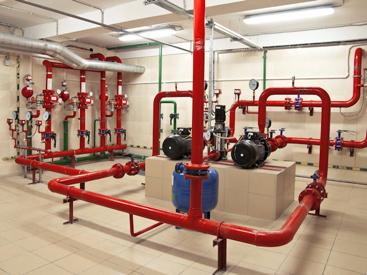

PLANO DE SEGURANÇA CONTRA INCÊNDIO E PÂNICO - PSCIP

A função do Projeto de Prevenção e Combate a Incêndio tange principalmente o fornecimento de soluções eficazes que visem à proteção contra a ocorrência de incêndios, e também o combate ao incêndio que já ocorre.
O projeto de incêndio pode ser aplicado em todos os tipos de construção e em diversos segmentos como, exemplo: comércios, restaurantes, indústrias, shopping centers, hospitais, escolas etc.
A amplitude de aplicações do projeto de prevenção e combate a incêndio sublinha a importância da presença deste tipo de projeto. Portanto, uma variedade de locais que contém elevada circulação de pessoas ou com o acúmulo de mercadorias, como é o caso de depósitos, são muito úteis.
Quando fazer um Plano de Segurança Contra Incêndio e Pânico - PSCIP ou Projeto Técnico de Prevenção a Incêndios e a Desastres - PTPID?
- Construção de uma edificação;
- Reforma de uma edificação;
- Mudança de ocupação ou uso;
- Ampliação da área construída;
- Aumento da altura da edificação;
- Regularização das edificações e áreas de risco;
Assim como o projeto estrutural, projeto hidráulico, projeto de gás, projeto hidrossanitário, projeto elétrico, projeto arquitetônico, que são projetos complementares importantes, os projetos de incêndios tem extrema usabilidade. Logo, eles tem que se adequarem as normas vigentes da ABNT NBR e do corpo de bombeiros do Paraná.
Com isto, evita-se riscos de explosões, fogo, perca de pessoas, percas materiais, prejuízos significativos em todos os sentidos. Portanto, eles atendem uma demanda de comodidade, conforto e segurança aos moradores das Edificações, dos empresários e poder público de um modo geral.
Algumas seguradoras até diminuem o preço do seguro pelo fato de haver determinados dispositivos de segurança no projeto de prevenção e combate a incêndios que qualifica a edificação ainda mais segura.
O Auto de Vistoria do Corpo de Bombeiros (AVCB) é um documento essencial para a segurança de edificações e locais de grande aglomeração, garantindo que estes estejam de acordo com as normas e padrões de segurança estabelecidos. No estado do Paraná, a regularização e emissão do AVCB são coordenadas pelo Corpo de Bombeiros Militar, uma instituição comprometida com a proteção da vida e do patrimônio da população. A emissão deste documento é de extrema importância, pois, para solicitar outras licenças necessárias ao funcionamento do empreendimento, tais como o Alvará de Licença, é preciso ter o AVCB antecipadamente.
O Certificado de Licença do Corpo de Bombeiros (CLCB) é um documento fundamental para a segurança de estabelecimentos comerciais, industriais e de prestação de serviços em todo o Brasil. Esse certificado atesta que o local foi vistoriado e está de acordo com as normas de segurança contra incêndios estabelecidas pelo Corpo de Bombeiros, garantindo a proteção das pessoas que frequentam o local.
O Certificado de Licença do Corpo de Bombeiros – CLCB, é um documento que certifica a edificação com baixo potencial de incêndio e pânico. Sua emissão é mais simples e rápida.
Já o Auto de Vistoria do Corpo de Bombeiros – AVCB, é um documento mais complexo e demorado de se obter, mas ambos necessitam a contratação de um engenheiro habilitado.
Alguns links importantes:
https://www.bombeiros.pr.gov.br/http://www.prevfogo.pr.gov.br/
Normas NPTs e NPAs dos Bombeiros do Paraná
Projeto da Companhia Paranaense de Gás Compagas, Maringá, Londrina, Curitiba
PROJETO DE GÁS GLP - MARINGÁ, LONDRINA, CURITIBA, CIANORTE, UMUARAMA, CAMPO MOURÃO... ATENDIMENTO EM TODO PARANÁ

O Projeto de gás GLP visa detalhar o sistema para utilização direta do gás. Ele é elaborado para se utilizar em casas para os fogões, aquecedores de água, churrasqueiras, para indústrias, caldeiras, fornos, edificações comerciais, restaurantes, Prédios, shoppings centers, hospitais, etc...
Para que esse processo seja seguro e vantajoso financeiramente, se faz necessário que todo o sistema seja projetado adequadamente com um projeto de gás de excelência. Para isto, as normas técnicas NBRs ABNTs vigentes são necessárias além da utilização de materiais e mão de obra especializados.
O gás liquefeito de petróleo (GLP) é composto por propano e butano e tem maior poder calorífico que o gás natural. O GLP é inodoro e por esta questão é inserido um composto chamado “Mercaptano” que dá um cheiro forte característico para identificação de vazamentos. O poder calorífico e as características de cada gás devem sempre ser considerado em qualquer projeto de gás, inclusive, o projeto de gases medicinais tem que levar em conta as características diferentes de cada gás.
O projeto da Companhia Paranaense de Gás (Compagas) pode ser desenvolvido por diversos tipos de tubulações.
Instalações de gás
A correção de vazamento de gás é muito necessária para evitar explosões. O tipo de gás utilizado pode ser calorífico. Como resultado, pode causar prejuízos e danos ao dono do estabelecimento e a terceiros por quebradeiras desnecessárias.
No caso de hospitais, os gases medicinais são caros. Um bom projeto de gás medicinal fará com que o sistema exerça as suas funções de modo excelente. Então, as normas da ABNT devem ser consultadas e colocadas em prática. As manutenções periódicas da rede devem ser previstas.
O teste de estanqueidade é recomendável periodicamente a cada ano. Dessa forma, é um instrumento de averiguação de possíveis vazamentos e assim, a realização de manutenções preventivas. Como resultado, o sistema estará sempre com a manutenção em dia e operante para as suas finalidades e segurança. Entretanto, o corte de prejuízos devidos a consertos de eventuais vazamentos na obra que a rede tiver fará a diferença na economia de gás.
A rede de gás da edificação sempre precisa de um excelente projeto de gás para possível manutenções no Pós obra. Assim, para evitar quebradeiras desnecessárias, atingir o melhor desempenho da rede e ter um baixo custo de manutenção. Dessa maneira, a segurança sempre deve ser pensada em primeiro lugar. Com isto, se atinge a estabilidade do sistema e obtém-se uma longa duração de operação da rede.
Exemplos de algumas companhias de gás GLP a granel são: Liquigás, Ultragaz, Nacional Gás, Supergasbras, Copagaz, etc. Semelhante as contas de água e luz, telefone, gás também tem a sua conta emitida mês a mês.
Ter um bom instalador de gás para a execução das instalações de gás conforme o projeto de gás é fundamental para seguir fielmente as orientações do que foi dimensionado pelo Engenheiro projetista.
Assim como o projeto estrutural, projeto hidráulico, projeto de incêndio, projeto hidrossanitário, projeto elétrico, projeto arquitetônico, etc, que são projetos complementares importantes, os projetos de gases tem extrema importância e usabilidade de maneira a se adequarem as normas vigentes evitando riscos de explosões, falta de gás, pressão extrema na rede ou pressão muito baixa sendo bastante empregados em todos os tipos de condomínios principalmente os de alto padrão, casas de alto padrão, etc. Para atenderem uma demanda de comodidade, conforto e segurança aos moradores do condomínio, aos empresários de um modo geral.
O Projeto da central de gás também é extremamente importante ser bem dimensionado para que não falte gás em momentos críticos de intensa usabilidade da edificação.
O gás GLP pode ser usado tanto em condomínios residenciais horizontais quanto em condomínios residenciais verticais sendo bastante aplicados para aquecedores a gás atendendo muito bem a demanda principalmente nos dias de inverno com chuva e frio.
Vantagens do projeto de gás glp:
- 1) projeto realizado conforme normas vigentes;
- 2) dimensionamento personalizado conforme as necessidades dos clientes;
- 3) posicionamento correto dos pontos de consumo;
- 4) dimensionamento e especificação das tubulações e demais componentes do sistema;
- 5) evita retrabalhos;
- 6) prazo reduzido para a execução da obra;
- 7) evita quebradeiras na edificação desnecessárias no pós obra caso haja vazamento por se saber por onde está passando a rede;
- 8) aprovação no corpo de bombeiros, o projeto de gás GLP é anexo do projeto de prevenção de incêndio da edificação;
- 9) detalhamento de materiais para orçamentos, evitando sobras e desperdícios;
- 10) nivelar as propostas de execução da rede de gás dos prestadores de serviços/instaladoras de gás.
- 11) conexões para gás conforme detalhamento do projeto evitando desperdícios.
Indicamos gás em maringá, gás em Londrina, Gás em Curitiba, Gás em Cianorte, Gás em Paranavaí, Gás em Umuarama, Gás em Campo Mourão. A engenharia de gás é essencial para análise e averiguação de todos os parâmetros e com isto evitar riscos de acidentes. O projeto da central de gás na melhor performance possível.
PROJETO DE GÁS MEDICINAL - MARINGÁ, LONDRINA, CURITIBA, CIANORTE, UMUARAMA, CAMPO MOURÃO... ATENDIMENTO EM TODO PARANÁ

Os gases medicinais também chamados de gases terapêuticos são considerados medicamentos, e como tal são utilizados na área da saúde com o objetivo de ventilar, oxigenar ou até mesmo anestesiar um paciente ou aliviar a dor dele quando, de um ato doloroso. Além disso, também é usado para tratar as infecções respiratórias agudas, tendo amplo uso em toda a área hospitalar, desde o serviço das urgências, no bloco operatório, na sala de recobro e de reanimação até ao quarto do paciente.
Vantagens do Projeto de Gás Medicinal
- 1) projeto realizado conforme normas vigentes;
- 2) dimensionamento personalizado conforme as necessidades dos clientes;
- 3) posicionamento correto dos pontos de consumo;
- 4) dimensionamento e especificação das tubulações e demais componentes do sistema;
- 5) evitar retrabalhos, antecipar situações desfavoráveis para execução e pós obra na manutenção;
- 6) prazo reduzido para a execução da obra;
- 7) evitar quebradeiras na edificação desnecessárias no pós obra caso haja vazamento por se saber por onde está passando a rede;
- 8) reduz o custo de execução;
- 9) detalhamento de materiais para orçamentos, evitando sobras e desperdícios;
- 10) nivelar as propostas de execução da rede de gás dos prestadores de serviços/instaladoras de gás.
- 11) conexões para gás conforme detalhamento do projeto evitando desperdícios.
Indicamos gás em maringá, gás em Londrina, Gás em Curitiba, Gás em Cianorte, Gás em Paranavaí, Gás em Umuarama, Gás em Campo Mourão. A engenharia de gás é essencial para análise e averiguação de todos os parâmetros e com isto evitar riscos de acidentes. O projeto da central de gás na melhor performance possível.
TESTE DE ESTANQUEIDADE
O chamado teste de estanqueidade das tubulações de gás, é uma maneira utilizada para fazer a verificação de algum tipo de vazamento na rede, percorrendo a superfície de contato das tubulações. Para essa comprovação é utilizado o ar comprimido ou um gás inerte, com a adição da pressão dentro das tubulações para avaliação.
Assim, através de um medidor de pressão chamado de manômetro é possível avaliar se a pressão interna sofreu alterações. Se caso sofrer, é porque deu vazamento e assim, deve-se percorrer toda a rede para identificar o(s) ponto(s) de vazamento e saná-los.
Uma equipe de parceiros especializados no assunto é de grande importância haja vista que por exemplo o gás GLP vazando em um ambiente fechado, se acumula na parte inferior, sem ventilação, com isto, qualquer faísca irá causar uma grande explosão.
Neste sentido, o teste de estanqueidade tem que ser feito periodicamente, tanto para o gás glp quanto para o gás medicinal. Até mesmo para não perder os gases porque eles tem custos significativos no orçamento mensal da instituição.
A recomendação é que os testes de estanqueidade sejam realizados anualmente com a emissão de um laudo de estanqueidade assinado por um Engenheiro Responsável da área.
PROJETO ARQUITETÔNICO DE REGULARIZAÇÃO PARA A PREFEITURA

O projeto arquitetônico de regularização para a prefeitura visa atualizar a atual situação da planta já construída de modo que a prefeitura possa fazer uma avaliação justa para correta cobrança de impostos para mais ou para menos em termos de IPTU. Também serve para a correta regularização da planta para os bombeiros em seu projeto de prevenção de incêndio caso seja necessário atualizá-lo. Neste sentido, manter o projeto arquitetônico atualizado é o melhor caminho para a correta cobrança de impostos da prefeitura e passar a correta situação de projeto arquitetônico para os bombeiros poderem aprovar o correto Projeto Técnico de Prevenção a Incêndio e a Desastres (PTPID) de edificações ou eventos.
PROJETO AMBIENTAL

O Projeto Ambiental almeija atender a preservação do meio ambiente agindo de maneira sustentável pensando num todo para o benefício de toda a sociedade. Quanto mais preservado o meio ambiente maior é a qualidade de vida das pessoas. A conscientização das pessoas em relação a preservação do meio ambiente é importantíssimo, é pensar em si, no bem estar do próximo e nas futuras gerações. E neste contexto, a sustentabilidade se encaixa perfeitamente. Criar projetos ambientais sustentáveis é a meta.